Copilot Studio 실습
Microsoft Learn의 Copilot Studio 실습 랩 여섯 개를 한국어로 옮기고, 막히기 쉬운 지점에 설명을 덧붙였습니다. 원문에 실린 화면 이미지를 모두 포함했습니다.
이 문서는 Microsoft Learn 실습 랩 mslearn-copilotstudio를 한국어로 옮기고 설명을 덧붙인 자료입니다. 원문 랩은 영어로만 제공됩니다.
Copilot Studio는 기능과 화면이 빠르게 바뀝니다. 이 문서는 2026년 9월 기준이므로, 정확한 내용 확인을 위해서는 각 단원 머리의 원문 링크를 눌러 최신 내용을 확인해 주세요.
입력값과 수식은 원문 그대로 옮겼으니 영어 표기 그대로 사용하시면 됩니다.
화면 이미지와 원문 내용의 저작권은 Microsoft에 있습니다.
| 랩 | 제목 | 다루는 것 | 소요 |
|---|---|---|---|
| 00 | 환경 준비 | Power Platform 환경과 솔루션 만들기 | 10분 |
| 01 | 에이전트 만들기 | 템플릿, 자연어 생성, 지침, 지식, 데모 게시 | 45분 |
| 02 | 토픽 관리 | 토픽 끄기, Copilot 토픽 생성, 노드, 변수 | 45분 |
| 03 | 지식 관리 | Dataverse, 파일, 웹사이트, 생성형 답변, Teams 게시 | 60분 |
| 04 | 워크플로 도구 | 에이전트 흐름, Teams 게시, Excel 조회 | 60분 |
| 05 | 새 환경 | 지침 기반 에이전트, 추론 추적 | 30분 |
공통 사전 조건
- Microsoft Entra ID 계정
- Copilot Studio 라이선스 또는 무료 체험판 가입
- 에이전트와 관련 자산을 만들 수 있는 Power Platform 환경과 솔루션
- 랩 00에서 만든 환경과 Lab Exercises 솔루션을 쓰거나, 기존에 쓰던 환경과 솔루션을 써도 됩니다
- 준비된 환경이 없다면 랩 00을 먼저 마치세요
미리 보기 중인 새 Copilot Studio 환경이 보일 수 있습니다. 랩 00부터 04까지는 현재(표준) 인터페이스를 기준으로 작성됐으므로, 새 환경에서는 단계와 화면이 맞지 않습니다. 랩 05만 새 환경을 씁니다.
생성형 오케스트레이션이 켜져 있으면 에이전트는 지침, 지식, 토픽, 도구를 조합해 응답을 동적으로 만듭니다. 각 랩은 이 네 가지 중 하나를 깊게 다룹니다.
랩 00 · 환경 준비 10분
랩을 시작하기 전에 작업할 개발 환경을 만듭니다.
연습 1 · Power Platform 환경 만들기
작업 1.1 · 관리 센터 열기
- 브라우저에서
https://admin.powerplatform.microsoft.com/manage/environments로 이동해 이 실습용 계정으로 로그인합니다. - 로그인 상태를 유지할지 물으면 유지를 선택합니다.
- 표시되는 팝업 메시지를 닫습니다.
작업 1.2 · 기본 환경에 Dataverse 추가
- Contoso (default) 환경의 줄임표(...)를 선택하고 Add Dataverse를 선택합니다.
- 기본 설정을 그대로 두고 Add를 선택합니다.
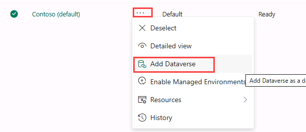
작업 1.3 · 새 환경 만들기
- Environments 페이지에서 + New를 선택하고 다음처럼 설정합니다.
- Type · Developer
- Macro Region Geography · North America
- Name · 본인 이름
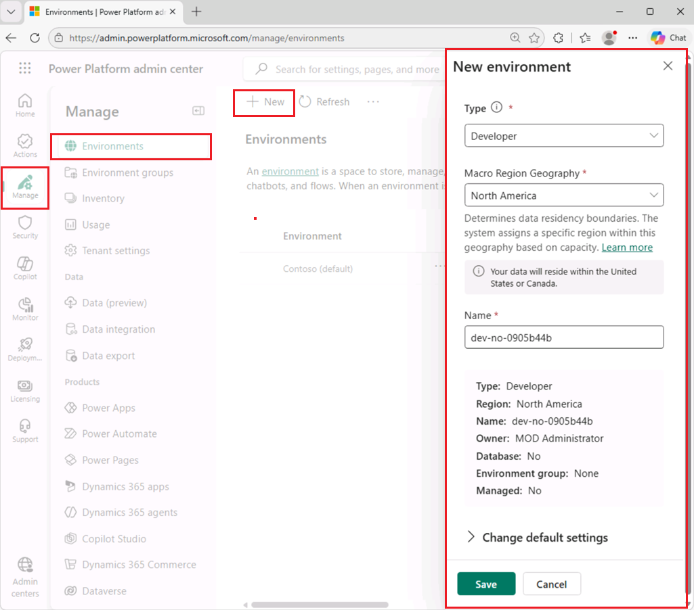
예전에 Region이던 항목이 Macro Region Geography로 바뀌었습니다. 여기서 고른 지역이 데이터가 저장되는 범위를 정합니다.
- Change default settings를 펼치고 다음처럼 설정합니다.
- Environment group · None
- Make this a Managed Environment · No
- Get new features early · No
- Create on behalf · No
- Add a Dataverse data store? · Yes
- Next를 선택하고 Add Dataverse 섹션에서 다음처럼 설정합니다.
- Language · English (United States)
- Currency · USD ($)
- Deploy sample apps and data? · No
- Save를 선택하고 환경 상태가 Ready가 될 때까지 기다립니다. Refresh 버튼으로 화면을 갱신할 수 있습니다.
환경 프로비저닝은 테넌트 구성에 따라 몇 분 걸릴 수 있습니다.
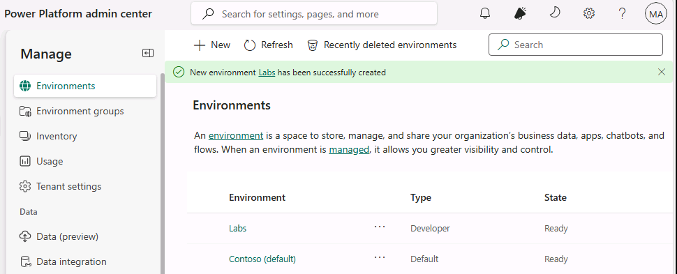
- 새 브라우저 탭에서
https://copilotstudio.microsoft.com/으로 이동해 로그인합니다. - 메시지가 나오면 Get Started를 선택하고 국가와 지역은 기본값을 유지합니다.
- 환영 메시지는 건너뜁니다.
- 오른쪽 위 환경 선택기에서 방금 만든 환경으로 전환합니다.
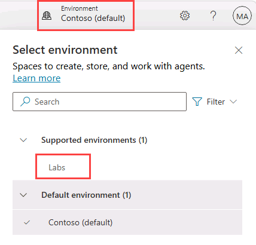
- Power Platform 관리 센터에서 만든 환경을 엽니다.
- URL에서 환경 ID(
12345678-90ab-cdef-1234-567890abcdef같은 긴 문자열)를 찾아 복사합니다. - 다음 주소에 붙여 넣어 직접 접근합니다.
https://copilotstudio.microsoft.com/environments/<환경ID>/home
작업 1.4 · 솔루션 만들기
- 왼쪽 탐색 창에서 줄임표(...)를 선택하고 Solutions를 선택합니다.
- Default Solution과 Common Data Services Default Solution을 포함한 솔루션 목록이 보입니다.
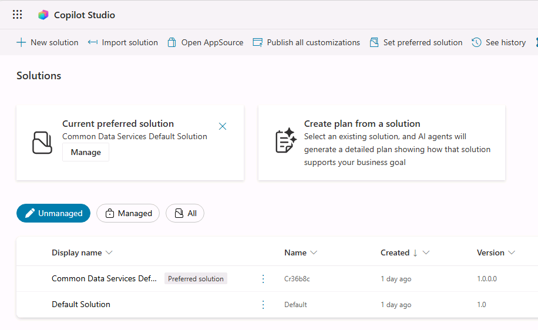
- + New solution을 선택합니다.
- Display name에
Lab Exercises를 입력합니다. - Name이 자동으로 채워졌는지 확인합니다.
- Publisher 드롭다운 아래 + New publisher를 선택합니다.
- Display name에
Fabrikam, Name에fabrikam, Prefix에fab을 입력합니다. - Save를 선택해 게시자를 만듭니다.
- Publisher 드롭다운에 Fabrikam (fabrikam)이 선택됐는지 확인합니다.
- Set as your preferred solution 확인란을 선택합니다.
이후 랩에서 만드는 자산이 자동으로 Lab Exercises 솔루션에 들어갑니다. 나중에 한꺼번에 옮기거나 지우기 쉬워집니다.
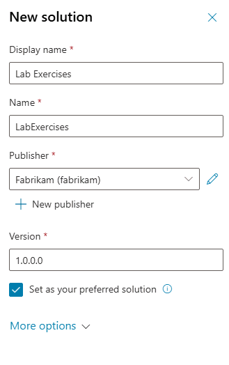
- Create를 선택합니다.
- Solutions 브라우저 탭을 닫습니다.
- Copilot Studio 페이지를 새로 고칩니다.
이제 작업할 Power Platform 환경과 솔루션이 준비됐습니다.
랩 01 · Copilot Studio로 에이전트 만들기 45분
- 템플릿으로 에이전트 만들기
- 에이전트를 만들고 이름 지정하기
- 지침으로 동작 정의하기
- 공개 웹사이트를 지식 원본으로 추가하기
- 게시하고 데모 웹사이트에서 테스트하기
연습 1 · Safe Travels 템플릿으로 만들기
작업 1.1 · 템플릿에서 에이전트 만들기
- Copilot Studio 홈에서 왼쪽 탐색의 Agents를 선택합니다.
- 페이지 상단에서 이 실습에 쓸 환경이 맞는지 확인합니다.
- Start with an agent template 아래 Safe Travels 템플릿을 선택합니다.
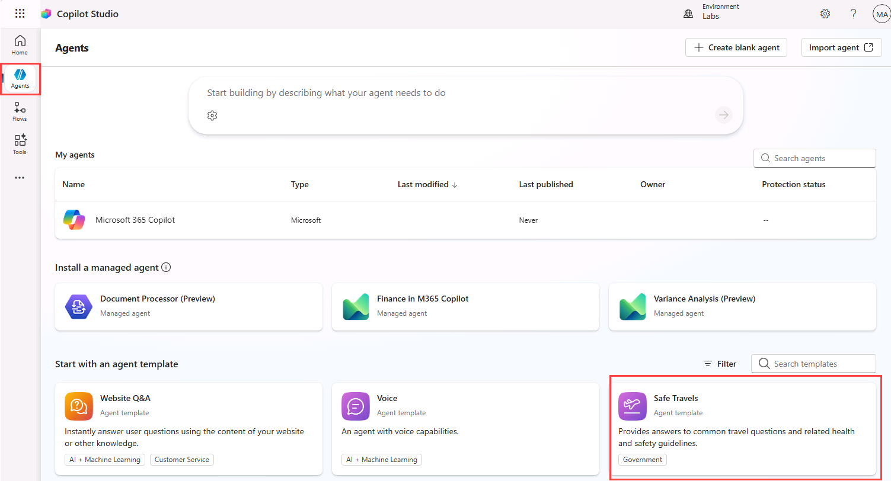
- 오른쪽 위 줄임표(...)에서 Edit advanced settings를 선택합니다.
- 선택된 Solution이 Lab Exercises, Schema name 접두사가 fab인지 확인하고 Cancel을 선택합니다.
- 오른쪽 위 Create를 선택합니다.
- Overview 탭에서 이름, 설명, 지침을 살펴봅니다.
- Knowledge 탭에서 지식 원본으로 추가된 공개 웹사이트를 확인합니다.
- 오른쪽 위 Settings를 선택합니다.
- Orchestration이 No · 클래식 오케스트레이션 사용, 응답을 토픽에 정의된 내용과 동작으로 제한으로 설정돼 있는 것을 확인합니다.
- 설정 페이지 오른쪽 위 X로 설정을 닫습니다.
- Topics 탭을 선택하고 System 필터를 적용합니다.
- Conversation Start 토픽을 선택합니다. Message 노드 내용을 확인하고, 그 내용이 Test 창에 그대로 표시되는 것을 봅니다.
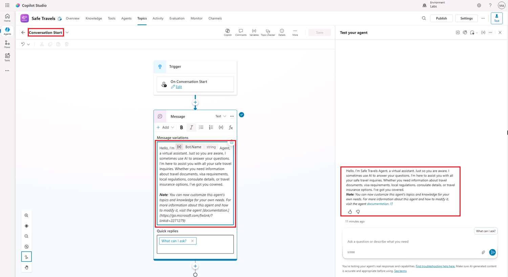
- 왼쪽 위 드롭다운에서 사용자 지정 토픽 What can I ask를 선택합니다.
작업 1.2 · 에이전트 테스트
- Test 창이 안 보이면 오른쪽 위 Test 아이콘을 선택합니다.
- Test 창에서 변수 {x} 아이콘 옆 줄임표(...)를 선택하고 Track between topics를 On으로 켭니다.
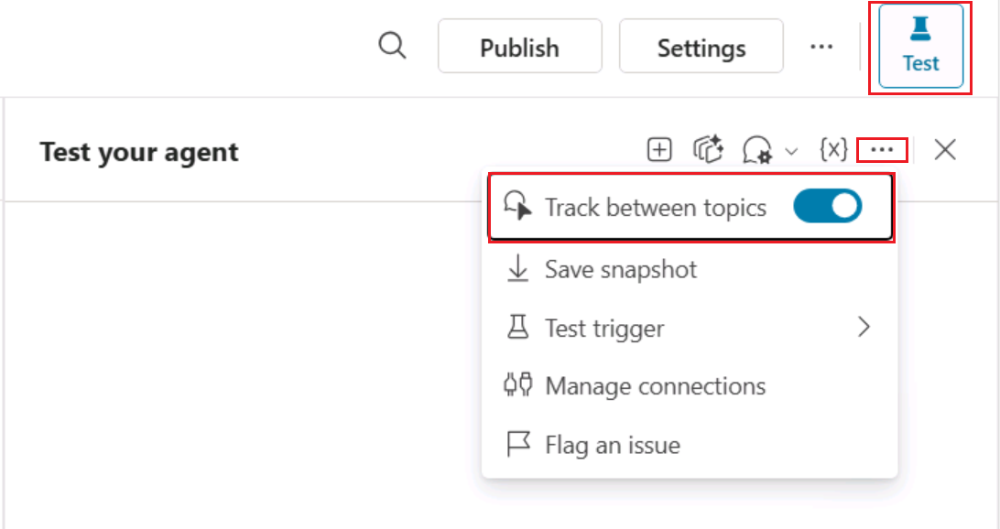
- 다음 프롬프트를 입력합니다.
Greeting 토픽이 선택되고, 그 토픽의 메시지 노드에서 응답이 나옵니다.
- Test 창 위쪽 Start new test session 아이콘 +를 선택합니다.
- 다음 프롬프트를 입력합니다.
What Can I Ask 토픽이 트리거되고 대화를 이어갈 몇 가지 선택지가 나옵니다.
- How do I get a passport? 옵션을 선택합니다. 설정된 지식 원본으로 응답이 생성되고, Conversational boosting 시스템 토픽이 참조될 수 있습니다.
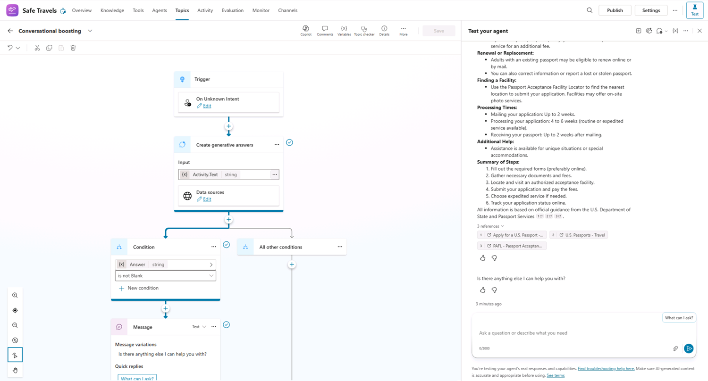
- 다음 프롬프트를 입력합니다.
Fallback 토픽이 선택되고, 에이전트가 다시 말해 달라고 요청합니다.
- 같은 프롬프트를 두 번 더 반복합니다. 환경과 오케스트레이션 동작에 따라 Fallback이나 Escalate 시스템 토픽이 트리거될 수 있습니다.
- 왼쪽 탐색에서 Agents를 선택합니다. Safe Travels 에이전트가 목록에 있어야 합니다.
연습 2 · Copilot으로 에이전트 만들기
자연어로 미국 정부 복지 혜택 문의에 답하는 에이전트를 만듭니다.
작업 2.1 · 에이전트 생성
- Copilot Studio 홈에서 만든 환경에 있는지 확인합니다.
- 왼쪽 탐색에서 Agents를 선택합니다.
- Start building by describing what your agent needs to do 텍스트 상자 왼쪽 아래에서 톱니바퀴 모양의 Agent Settings 아이콘을 선택합니다.
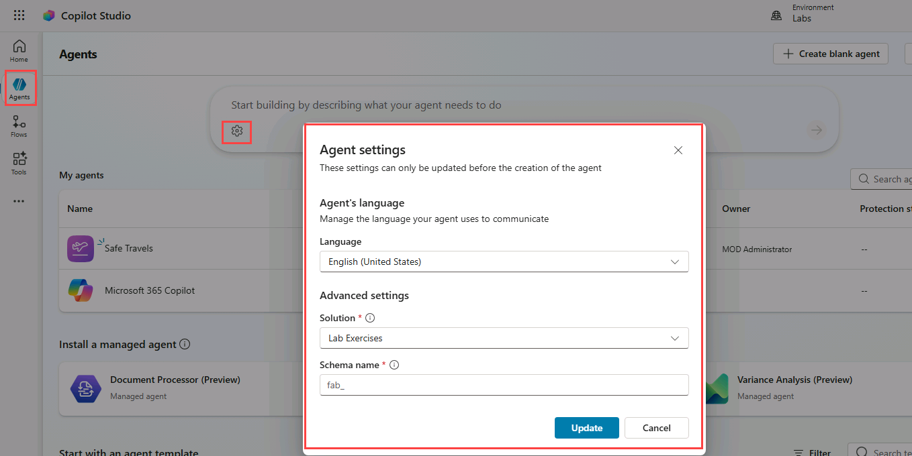
- 기본 언어는 English (United States)로 둡니다.
- Solution 드롭다운에서 Lab Exercises를 선택합니다.
- Schema name에
govbenefitsagent를 입력합니다. - Update를 선택합니다.
- 텍스트 상자에 다음 프롬프트를 입력합니다.
- Send 아이콘을 선택하면 에이전트가 만들어집니다.
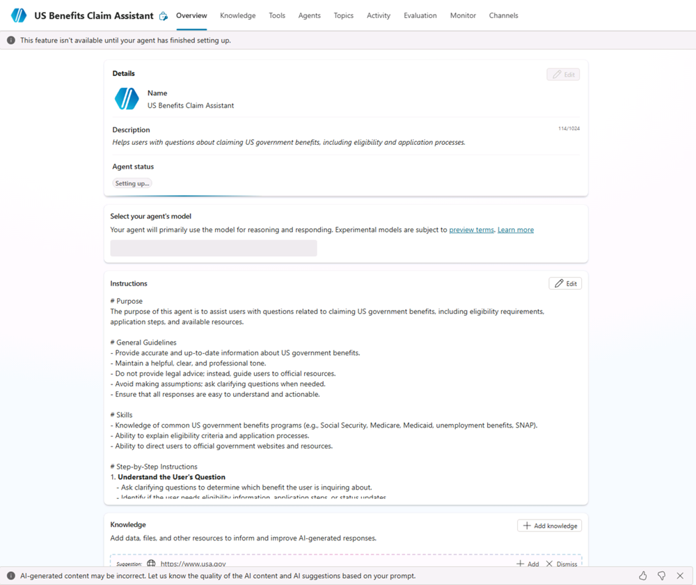
작업 2.2 · Overview 탭 설정
- Overview 탭을 선택합니다.
- Details 섹션에서 Edit를 선택합니다.
- Name에
US Benefits Assistant를 입력합니다. - Description에
Helps users with questions related to US government benefit programs를 입력합니다. - Save를 선택합니다.
- Select your agent's model 섹션에서 가능하면 GPT-5 Auto (Preview)를 선택합니다. 없으면 기본 모델을 그대로 둡니다.
- Instructions 섹션에서 Edit를 선택합니다.
- 지침의 # General Guidelines 아래에 다음 줄을 추가합니다.
- Save를 선택합니다.
지침은 에이전트가 어떻게 행동해야 하는지 안내할 뿐, 동작을 엄격하게 강제하지는 않습니다. 뒤 랩에서 토픽, 지식, 지식 원본을 제한한 생성형 답변으로 동작을 바꾸는 방법을 배웁니다.
- Suggested prompts 섹션에서 + Add suggested prompts를 선택합니다.
- Title에
Health, Prompt에What health assistance programs are available for me?를 입력합니다. - Save를 선택합니다.
작업 2.3 · 공개 웹사이트를 지식 원본으로 추가
- Knowledge 탭을 선택합니다.
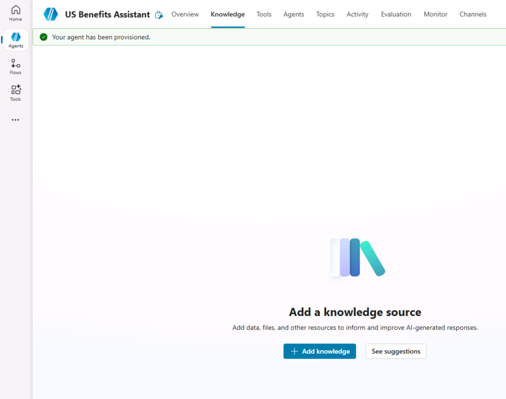
- + Add knowledge를 선택합니다.
- Public websites를 선택합니다.
- Public website link에
https://www.usa.gov/benefits를 입력합니다. 복지 프로그램 정보가 담긴 공식 정부 사이트입니다. - Add를 선택합니다.
- Name에
Government benefits를 입력합니다. - Description에 다음을 입력합니다.
- Add to agent를 선택합니다.
공개 웹사이트 색인은 몇 분 걸릴 수 있습니다. 응답이 불완전하면 몇 분 기다렸다가 다시 테스트하세요.
작업 2.4 · 에이전트 설정
- 오른쪽 위 Settings를 선택합니다.
- Orchestration이 Yes · 응답이 동적으로 생성되며 필요에 따라 도구와 지식을 사용으로 설정된 것을 확인합니다.
- Responses 섹션에 다음을 입력합니다.
- Knowledge 섹션에서 Allow ungrounded responses를 Off로 설정합니다.
- 같은 섹션에서 Use information from the Web을 On으로 설정합니다.
- Save를 선택합니다.
- 설정 페이지 왼쪽에서 Security를 선택합니다.
- Authentication을 선택합니다.
- 데모 웹사이트 채널에서 테스트하기 쉽도록 No authentication을 선택합니다.
- Save를 선택하고 한 번 더 Save를 선택합니다.
- 오른쪽 위 X로 설정을 닫습니다.
데모 웹사이트는 인증이 Authenticate with Microsoft일 때 쓸 수 없습니다. 이 랩에서만 편의를 위해 끄는 것이고, 실제 운영에서는 그대로 두면 안 됩니다.
작업 2.5 · 테스트
- 오른쪽 위 Test 아이콘으로 테스트 창을 엽니다.
- 변수 {x} 아이콘 옆 줄임표에서 Show activity map when testing을 On, Track between topics를 Off로 설정합니다.
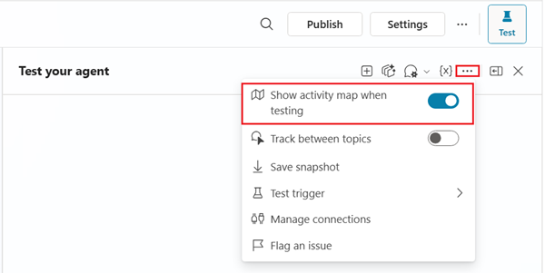
- Test 창 위쪽 +로 새 세션을 시작합니다.
- 다음 프롬프트를 입력합니다.
활동 맵이 표시되고, 응답 생성에 지식 원본이 쓰였다는 것이 보입니다.
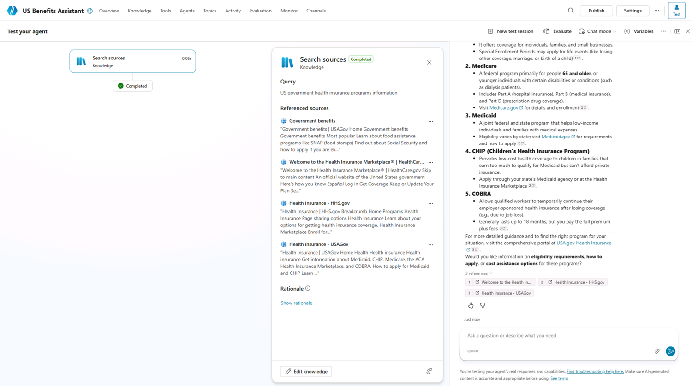
- 테스트 창을 닫습니다.
작업 2.6 · 데모 웹사이트에 게시
- 동작 표시줄에서 Publish를 선택하고 한 번 더 Publish를 선택합니다.
- Channels 탭을 선택합니다.
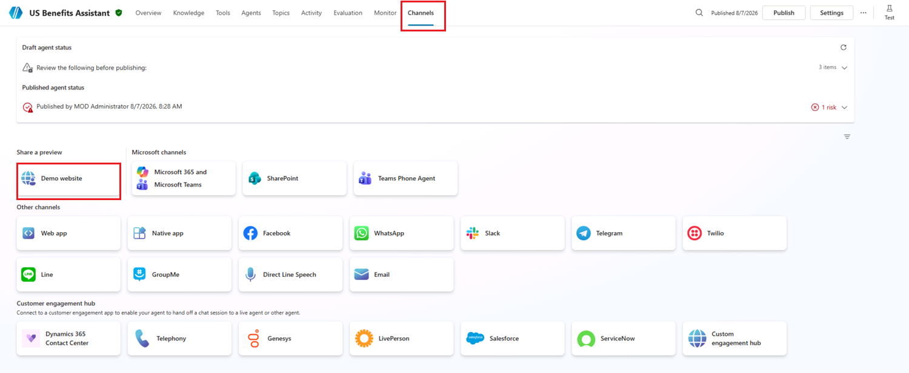
- Demo website 채널을 선택합니다. 에이전트 경험을 빠르게 확인하기 좋은 채널입니다.
- 다음처럼 설정합니다.
- Welcome message ·
Ask me about government benefit programs - Conversation starters · 아래 세 줄
- Welcome message ·
- Save를 선택합니다.
- Open demo website를 선택합니다.
- 다음 프롬프트를 입력합니다.
설정한 지식 원본의 정보를 참조한 응답이 나오고, 인용이나 출처 참조가 포함될 수 있습니다. 몇 가지 질문을 더 던져 보세요. 기능은 제한적이지만 복지 관련 질문에는 적절한 답을 줍니다.
에이전트를 만들고 지침으로 기대 동작을 정의했습니다. 공개 웹사이트를 지식 원본으로 추가하고, 그 원본이 답할 수 있는 질문으로 테스트했습니다. 이후 랩에서 토픽, 지식, 도구로 동작을 더 세밀하게 통제하는 방법을 배웁니다.
랩 02 · 토픽 관리 45분
- 필요한 정보를 단계별로 수집해야 할 때
- 질문 순서를 통제해야 할 때
- 응답을 변수에 저장해야 할 때
- 결과가 예측 가능해야 할 때
연습 1 · 에이전트 만들기
보험 청구를 검토하는 에이전트를 자연어로 만듭니다.
- Copilot Studio 홈에서 쓸 환경이 맞는지 확인합니다.
- 왼쪽 탐색에서 Agents를 선택합니다.
- 텍스트 상자 왼쪽 아래 Agent Settings 톱니바퀴 아이콘을 선택합니다.
- 기본 언어는 English (United States)로 둡니다.
- Solution에서 Lab Exercises를 선택합니다.
- Schema name에
insuranceagent를 입력합니다. - Update를 선택합니다.
- 다음 프롬프트를 입력하고 Send를 선택합니다.
연습 2 · 쓰지 않는 토픽 끄기
이 에이전트는 넘겨줄 상담사가 없으므로 Escalate 시스템 토픽을 끕니다. 쓰지 않는 시스템 토픽을 꺼 두면 생성형 오케스트레이션이 응답 방법을 정할 때 헷갈릴 여지가 줄어듭니다.
- Topics 탭을 선택합니다.
- System 필터를 적용합니다.
- Escalate 토픽을 찾습니다.
- 해당 토픽의 Enabled를 Off로 전환합니다.
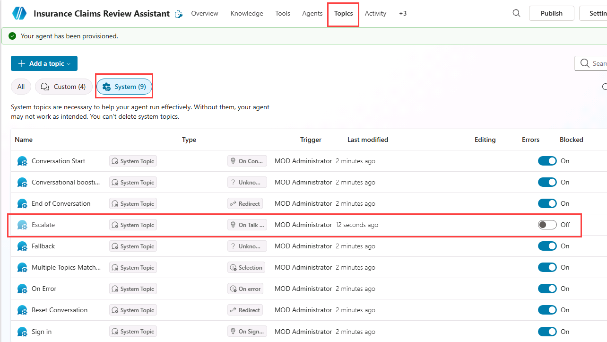
연습 3 · 자연어로 토픽 만들기
작업 3.1 · 설명으로 토픽 추가
- + Add a topic에서 Add from description with Copilot을 선택합니다.
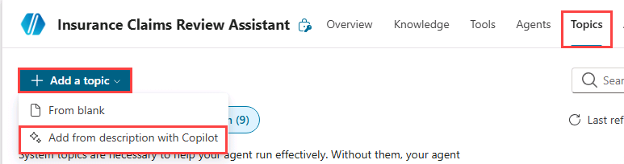
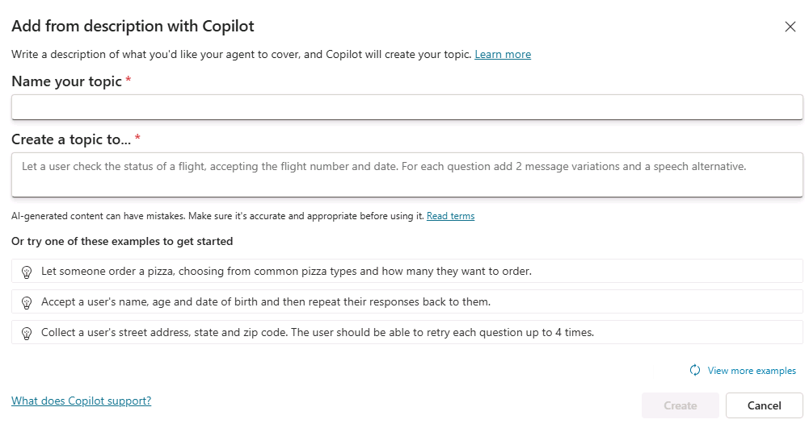
- Name your topic에
Customer Details를 입력합니다. - Create a topic to...에
Ask the customer for their name and email address를 입력합니다. - Create를 선택하고 Save를 선택합니다.
작업 3.2 · 자연어로 노드 편집
- Test your agent 패널이 열려 있으면 닫습니다.
- Edit with Copilot 패널이 오른쪽에 없으면 작성 캔버스 위쪽의 Copilot 아이콘을 선택합니다.
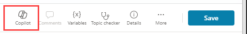
- 두 번째 Question 노드 What is your email address?를 선택합니다.
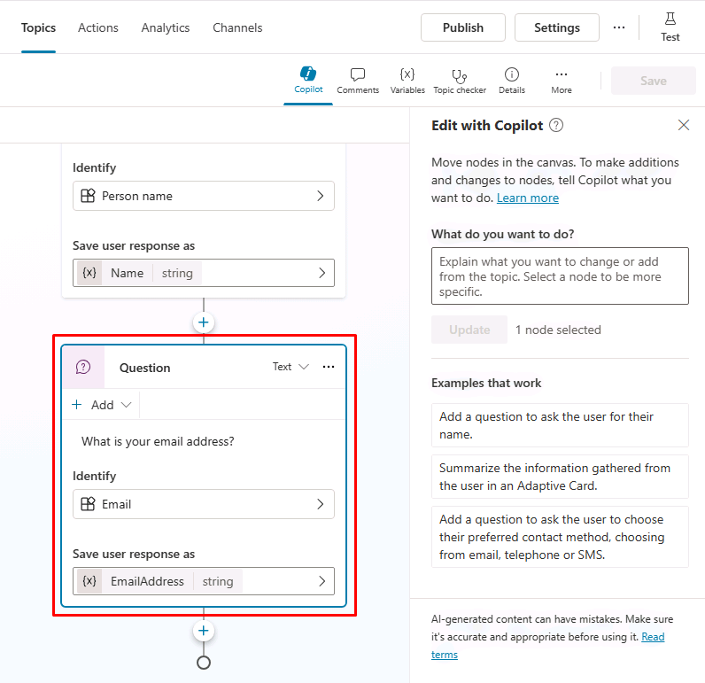
- What do you want to do? 필드에 다음을 입력합니다.
- Update를 선택합니다.
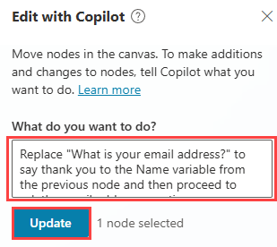
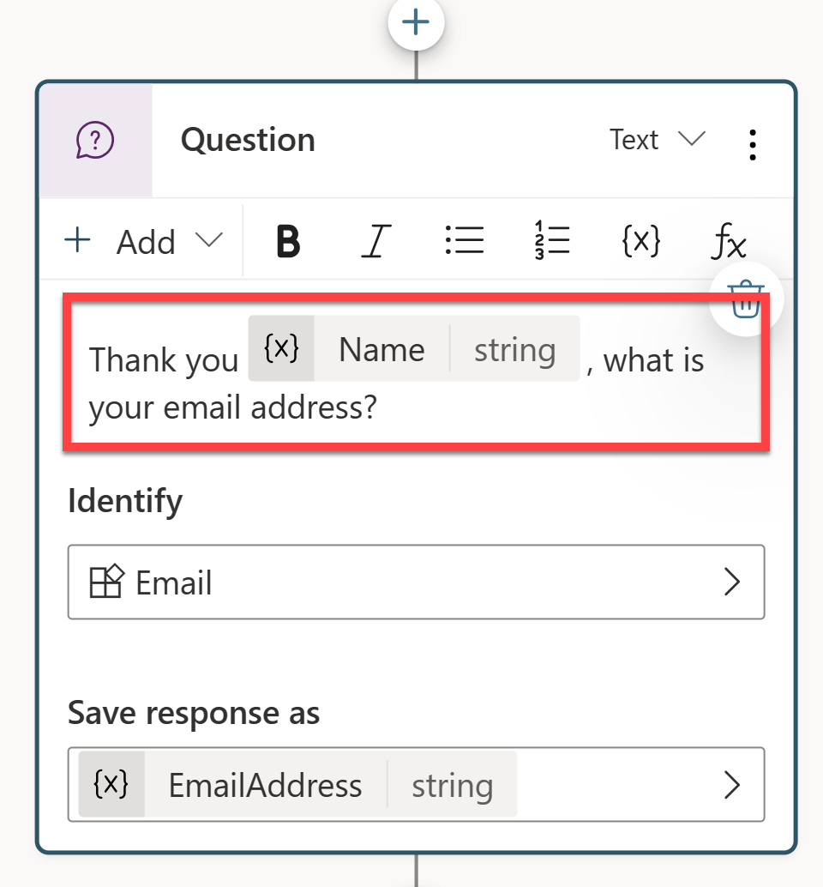
수정된 메시지가 이전 질문 노드에서 수집한 Name 변수를 참조해야 합니다. 제대로 반영되지 않으면 Undo를 선택하고 다른 표현으로 다시 시도하세요.
- Save를 선택합니다.
작업 3.3 · 적응형 카드 노드 추가
기존 노드를 고치는 것뿐 아니라 Copilot으로 새 노드를 추가할 수도 있습니다.
- 캔버스의 빈 곳을 선택해 아무 노드도 선택되지 않게 합니다.
- What do you want to do? 필드에 다음을 입력하고 Update를 선택합니다.
토픽 끝에 적응형 카드가 담긴 메시지 노드가 추가됩니다.
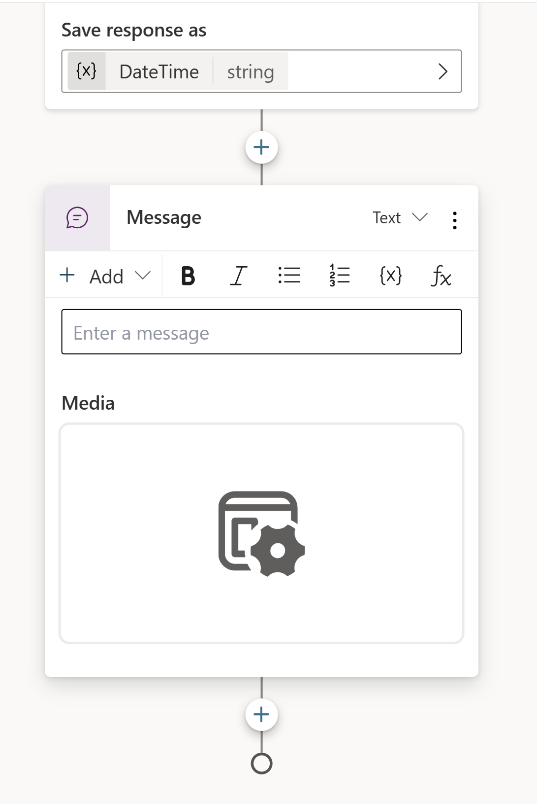
- 적응형 카드의 Media 상자를 선택하면 오른쪽에 속성이 나타납니다.
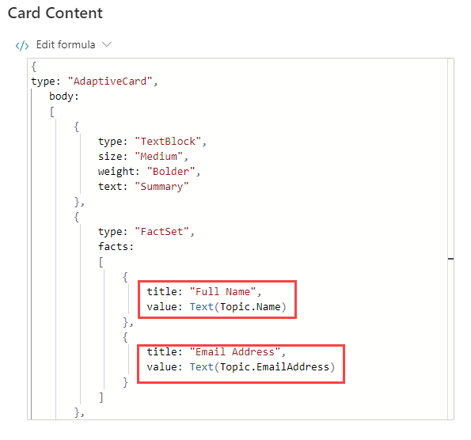
생성된 카드가 크게 다르다면 아래 수식으로 바꿔도 됩니다.
{
type: "AdaptiveCard",
body:
[
{
type: "TextBlock",
size: "Medium",
weight: "Bolder",
text: "Summary"
},
{
type: "FactSet",
facts:
[
{
title: "Full Name",
value: Text(Topic.Name)
},
{
title: "Email Address",
value: Text(Topic.EmailAddress)
}
]
},
{
type: "TextBlock",
text: "Thank you for providing the information."
}
]
}작업 3.4 · 질문 노드 추가
- 캔버스 빈 곳을 선택해 노드 선택을 해제합니다.
- Copilot 아이콘으로 Edit with Copilot 창을 다시 엽니다.
- 다음을 입력하고 Update를 선택합니다.
토픽 끝에 사용자가 고를 수 있는 선택지가 있는 질문 노드가 추가됩니다.
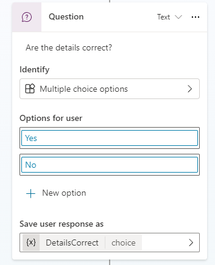
- Save를 선택합니다.
연습 4 · 변수 범위 설정
다른 토픽에서도 변수에 접근할 수 있게 합니다.
- Topics 탭에서 Customer Details 토픽을 엽니다.
- 상단 바에서 Variables를 선택해 변수 창을 엽니다. More > Variables에 있을 수도 있습니다.
- Topic 변수를 펼칩니다.
- 세 개 토픽 변수의 오른쪽 확인란을 모두 선택합니다. 이렇게 하면 에이전트의 다른 토픽에서도 변수를 쓸 수 있습니다.
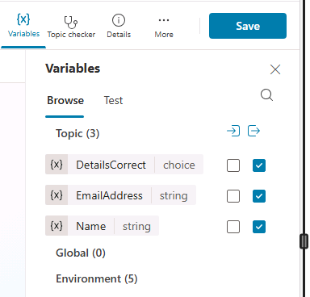
- Save를 선택합니다.
연습 5 · 빈 토픽에서 만들기
Estimate Repair 토픽을 만들고 노드를 추가한 뒤 Customer Details 토픽을 호출합니다.
작업 5.1 · 토픽 만들기
- Topics 탭에서 + Add a topic, From blank을 선택합니다.
- Details 아이콘으로 토픽 세부 정보 창을 엽니다. More > Details에 있을 수도 있습니다.
- Name에
Estimate Repair를 입력합니다. - Model description에 다음을 입력합니다.
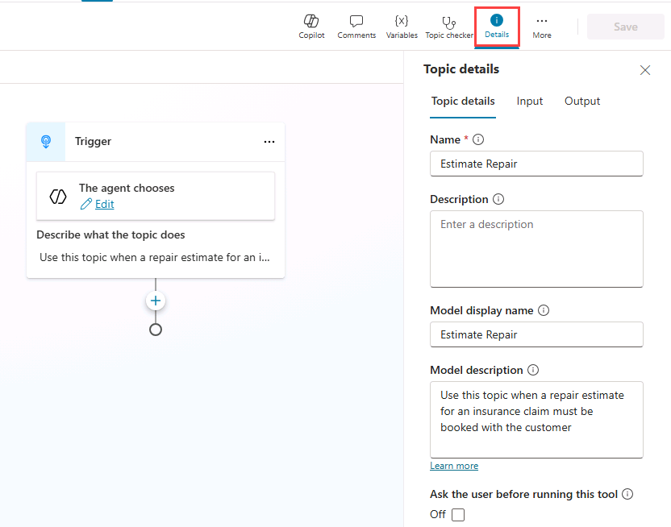
- Save를 선택합니다.
작업 5.2 · 트리거 유형 확인
- 토픽 맨 위 Trigger 노드를 선택합니다. 트리거 유형이 The agent chooses인지 확인합니다.
생성형 오케스트레이션이 켜져 있으면 에이전트는 앞서 입력한 모델 설명을 근거로 이 토픽을 언제 쓸지 판단합니다.
작업 5.3 · 메시지 노드 추가
- Trigger 노드 아래 + 아이콘을 선택하고 Send a message를 선택합니다.
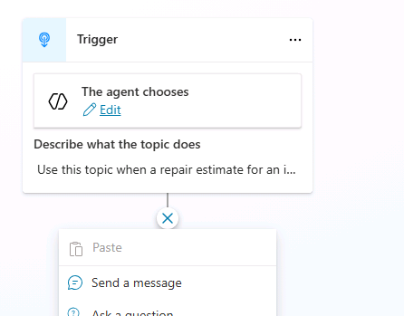
- Enter a message에 다음을 입력하고 Save를 선택합니다.
작업 5.4 · Customer Details 토픽으로 연결
- 메시지 노드 아래 + 아이콘을 선택합니다.
- Topic management > Go to another topic > Customer Details를 선택합니다.
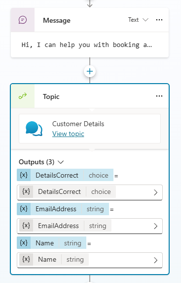
- Save를 선택합니다.
작업 5.5 · 조건 노드 추가
- Topic 노드 아래 +를 선택하고 Add a condition을 선택합니다.
- 조건 노드에서 DetailsCorrect 변수를 선택합니다.
- is equal to를 선택합니다.
- Yes를 선택합니다.
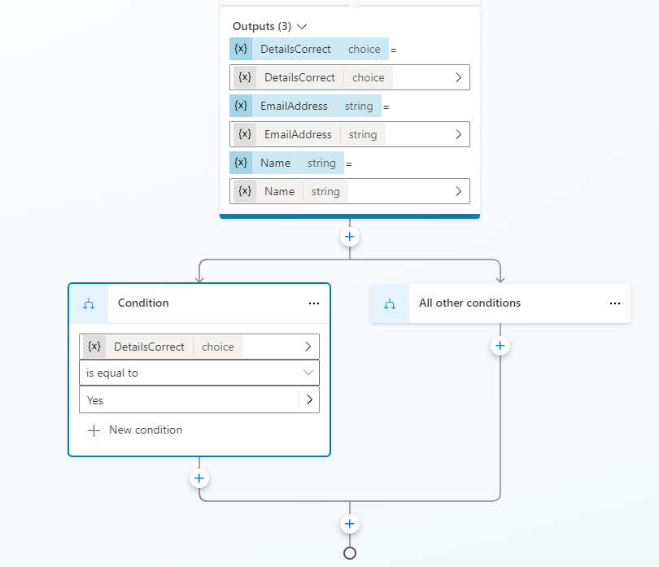
- Save를 선택합니다.
작업 5.6 · 질문 노드 추가
- 왼쪽 조건 노드 아래 +를 선택하고 Ask a question을 선택합니다.
- Enter a message에 다음을 입력합니다.
- Identify에서 Date and time을 선택합니다.
- Save user response as의 변수를 선택하고 변수 이름에
VisitDateTime을 입력합니다. - 왼쪽 질문 노드 아래 +를 선택하고 Send a message를 선택해 다음을 입력합니다.
- 그 메시지 노드 다음에 Topic management > End all topics 노드를 추가합니다.
- Save를 선택합니다.
작업 5.7 · 지침 업데이트
- Overview 탭을 선택합니다.
- Instructions 섹션에서 Edit를 선택합니다.
- # Skills 아래에
Use the를 입력한 뒤/를 눌러 Estimate Repair 토픽을 선택하고, 이어서when a repair estimate is required.를 입력합니다.
토픽 이름을 그냥 텍스트로 쓰면 에이전트가 실제 토픽과 연결하지 못할 수 있습니다. /로 삽입해야 참조로 인식됩니다.
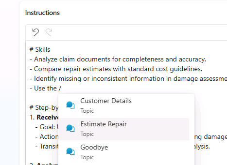
- Save를 선택합니다.
연습 6 · 테스트
- 오른쪽 위 Test 아이콘으로 테스트 창을 엽니다.
- 줄임표에서 Show activity map when testing을 On, Track between topics를 Off로 설정합니다.
- +로 새 세션을 시작합니다.
- 대화 시작 메시지가 나오면 다음을 입력해 토픽을 트리거합니다.
대화가 고객 이름을 묻는 것으로 시작됩니다.
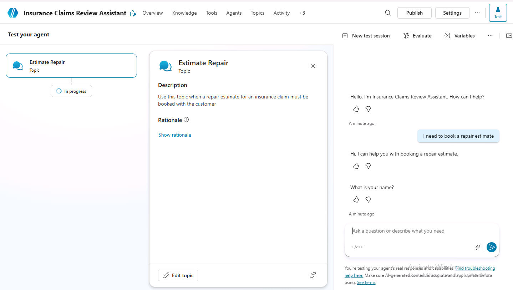
- 이름을 입력합니다.
- 이메일 주소를 입력합니다.
- 정보를 다 주면 적응형 카드가 입력값을 보여 주고 내용이 맞는지 묻습니다. Yes를 선택합니다. 대화 흐름이 Estimate Repair 토픽으로 돌아가는 것을 확인하세요.
- 날짜와 시간을 묻는 질문에
Tomorrow 10:00 AM을 입력합니다.
에이전트가 수리 견적 일정이 잡혔다는 확인 메시지로 응답합니다.
Customer Details와 Estimate Repair 토픽을 만들고, 생성형 AI를 켜 둔 상태에서도 노드로 구조화된 단계별 대화를 강제했습니다. 변수 범위를 설정해 Customer Details에서 모은 정보를 다른 토픽에서도 쓸 수 있게 했습니다.
랩 03 · 지식 관리 60분
- Dataverse 테이블 만들기
- 에이전트 만들기
- 파일, 공개 웹사이트, Dataverse 테이블을 지식 원본으로 추가
- 생성형 오케스트레이션 설정과 생성형 답변 노드 설정
- Microsoft Teams에 게시
연습 1 · Dataverse에 테이블 만들기
작업 1.1 · 경비 청구 테이블
- 브라우저에서 Power Apps 메이커 포털로 이동해 로그인합니다. 환영 메시지는 건너뜁니다.
- 페이지 상단에서 이 실습에 쓸 환경이 맞는지 확인합니다.
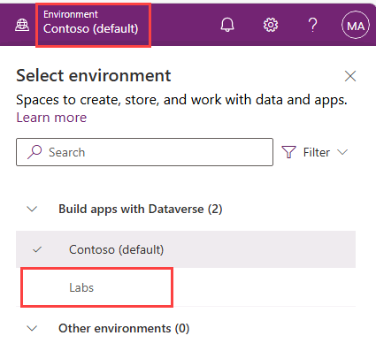
- 왼쪽 탐색에서 Tables를 선택합니다.
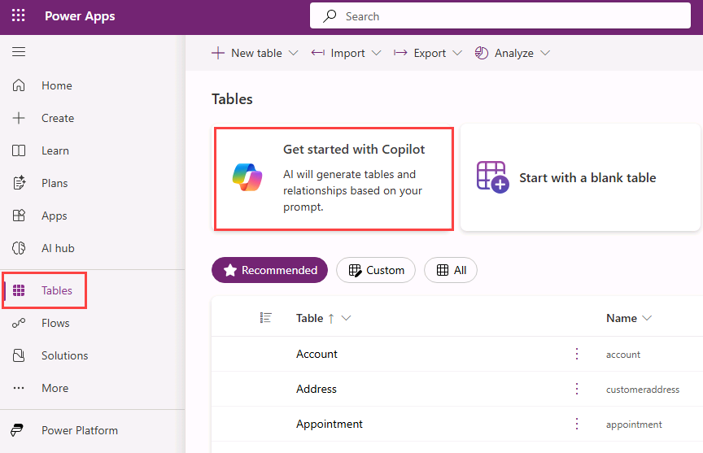
- Get started with Copilot 타일을 선택합니다.
- 대화 상자에서 Table options 아이콘을 선택하고 One table을 선택합니다.
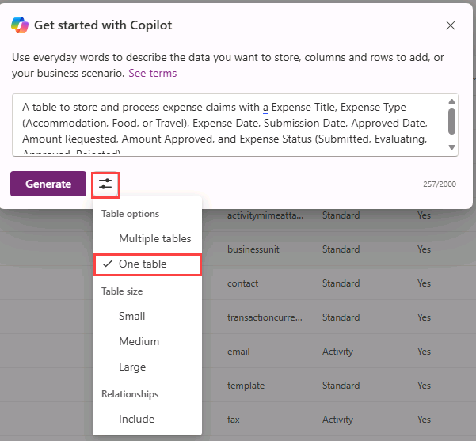
- 테이블을 설명하는 상자에 다음 프롬프트를 입력합니다.
- Generate를 선택합니다.
생성된 테이블 스키마는 화면과 조금 다를 수 있습니다. 열 이름이나 서식이 약간 달라지는 것은 정상입니다.
- 테이블이 만들어집니다. 테이블 이름을 기록해 두세요.
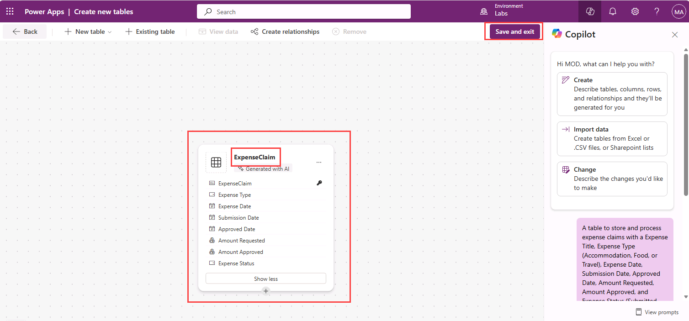
- Save and exit를 선택하고 한 번 더 선택합니다.
연습 2 · 에이전트 만들기
가상 회사의 경비 정책 문의에 답하는 에이전트를 만듭니다.
- Copilot Studio 홈으로 이동해 쓸 환경이 맞는지 확인합니다.
- 왼쪽 탐색에서 Agents를 선택합니다.
- 텍스트 상자 왼쪽 아래 Agent Settings 톱니바퀴 아이콘을 선택합니다.
- 기본 언어는 그대로 두고, Solution에서 Lab Exercises를 선택합니다.
- Schema name에
expenseagent를 입력하고 Update를 선택합니다. - 다음 프롬프트를 입력하고 Send를 선택합니다.
연습 3 · 지식으로 근거 만들기
작업 3.1 · 문서를 지식 원본으로 추가
- 새 탭에서 경비 정책 문서를 내려받습니다. 가상 회사의 경비 정책이 담겨 있습니다.
- 연습 2에서 만든 에이전트가 열린 Copilot Studio 탭으로 돌아갑니다.
- Knowledge 탭을 선택해 현재 지식 원본을 확인합니다. 아직 아무것도 없어야 합니다.
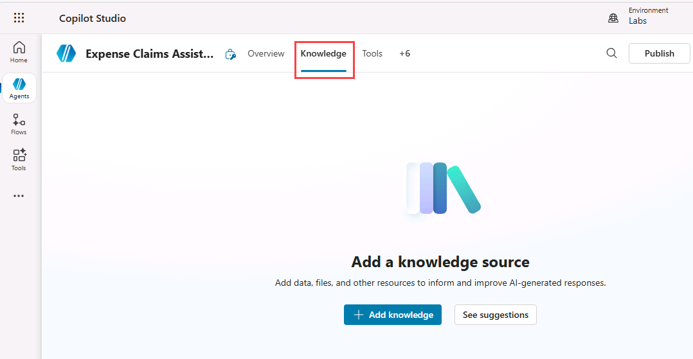
- + Add knowledge를 선택하고, 추가할 수 있는 지식 원본 종류를 살펴봅니다.
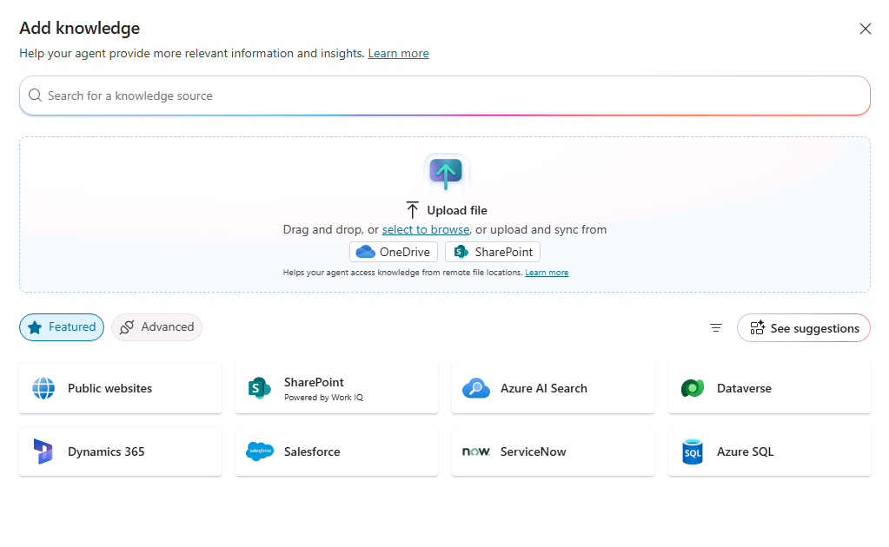
- Upload file 섹션의 select to browse로 방금 내려받은 경비 정책 문서를 올리고 Add to agent를 선택합니다.
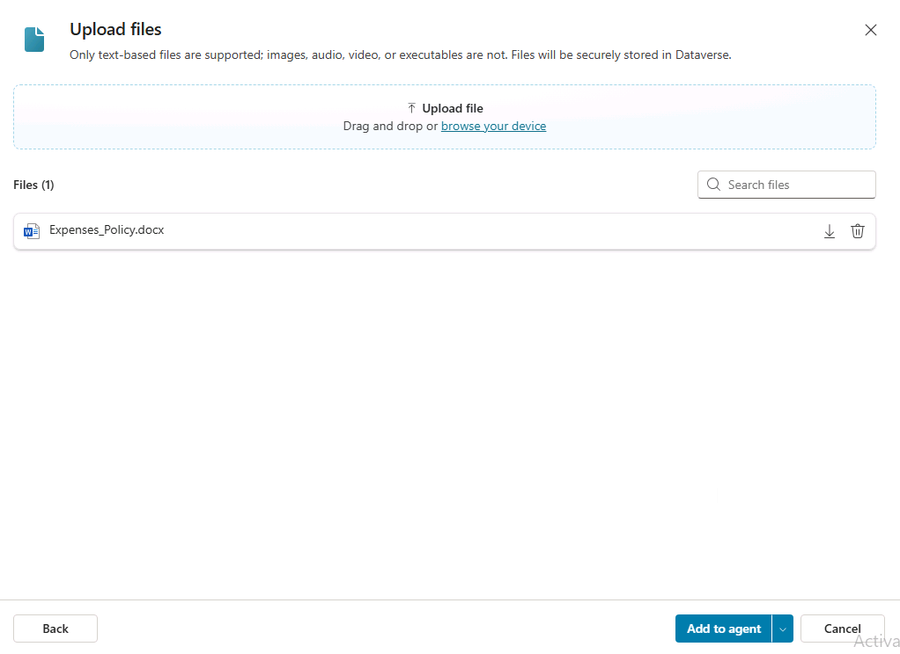
파일을 올리면 색인이 시작됩니다. 10분 이상 걸릴 수 있으므로, 다음 연습을 먼저 진행하고 나중에 다시 확인합니다.
작업 3.2 · 공개 웹사이트 추가
- Knowledge 탭에서 + Add knowledge, Public websites를 선택합니다.
- Public website link에
https://www.irs.gov/publications/p463을 입력하고 Add를 선택합니다. 출장비 정산 정보가 담긴 공식 정부 사이트입니다. - Name에
Travel, Gift, and Car Expenses | Internal Revenue Service를 입력합니다. - Description에
This knowledge source contains information on reimbursement of travel expenses.를 입력합니다. - Add to agent를 선택합니다.
공개 웹사이트 색인은 몇 분 걸릴 수 있습니다. 응답이 불완전하면 몇 분 기다렸다가 다시 테스트하세요.
작업 3.3 · Dataverse 테이블 추가
- Knowledge 탭에서 + Add knowledge, Dataverse를 선택합니다.
- 연습 1에서 만든 Expenses 테이블을 찾아 선택합니다.
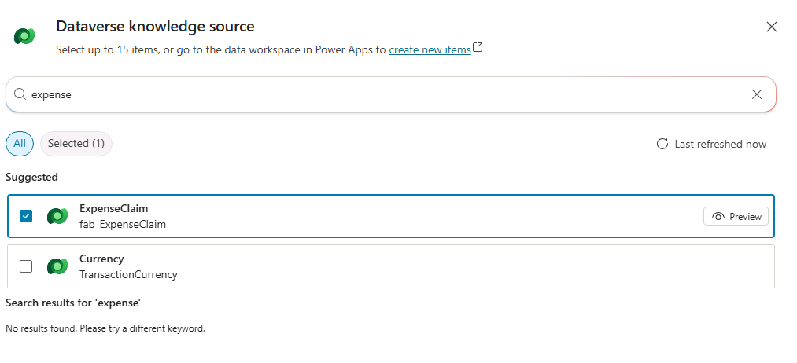
- Add to agent를 선택합니다.
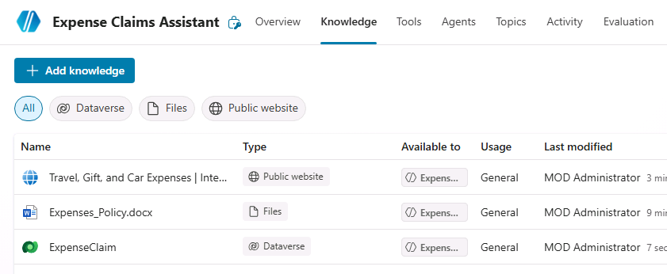
작업 3.4 · Dataverse 지식 원본 설정
- Knowledge 탭에서 Dataverse 테이블의 줄임표(⋮)를 선택하고 Edit를 선택합니다.
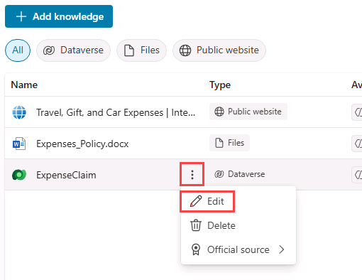
- Details 탭의 Name에
Expense Claims data를 입력합니다. - Synonyms 탭을 선택합니다.
- Expense Type 행에서 + Add synonyms를 선택합니다.
Expense label을 입력하고 Add, 이어서Expense category를 입력하고 Add를 선택합니다.
사용자가 열 이름과 다른 표현을 써도 에이전트가 같은 열을 찾도록 돕습니다. 한국어 환경이라면 실제 사용자가 쓰는 표현을 넣어 주는 것이 특히 효과적입니다.
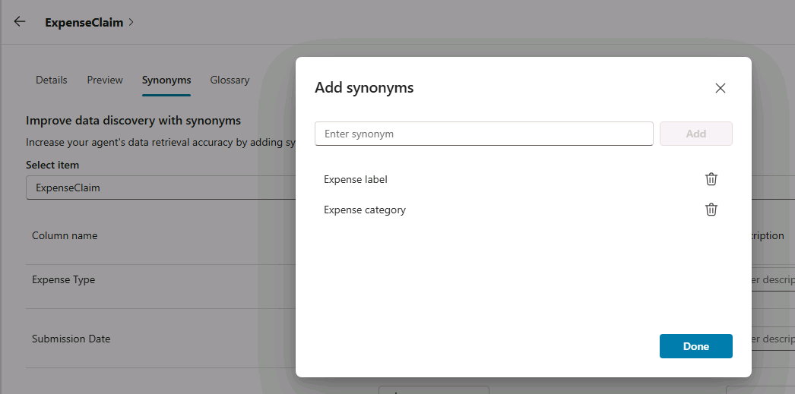
- Done을 선택합니다.
- Glossary 탭을 선택합니다.
- Enter term에
Incidental expenses를 입력합니다. - Enter description에 다음을 입력합니다.
- Save를 선택합니다.
작업 3.5 · 파일 색인 확인
- Knowledge 탭을 선택합니다.
- 업로드한 파일의 Status를 확인합니다. In progress라면 몇 분마다 새로 고쳐 Ready가 될 때까지 기다립니다.
작업 3.6 · 근거 테스트
- 오른쪽 위 Test 아이콘으로 테스트 창을 엽니다.
- 줄임표에서 Show activity map when testing을 On, Track between topics를 Off로 설정합니다.
- +로 새 세션을 시작하고 다음을 입력합니다.
업로드한 경비 정책 문서를 근거로 응답이 나오고, 다른 지식 원본도 함께 참조될 수 있습니다.
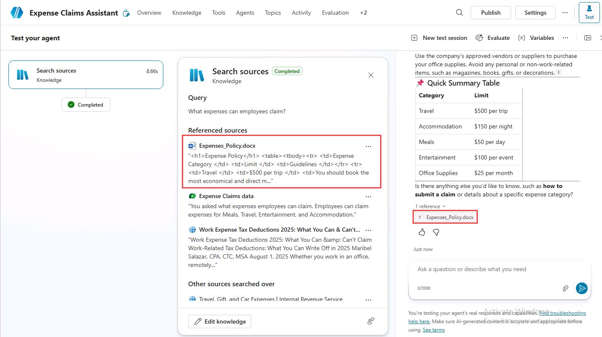
- 새 세션을 시작하고 다음을 입력합니다.
모든 지식 원본을 검색해 Dataverse 테이블로 응답을 만듭니다.
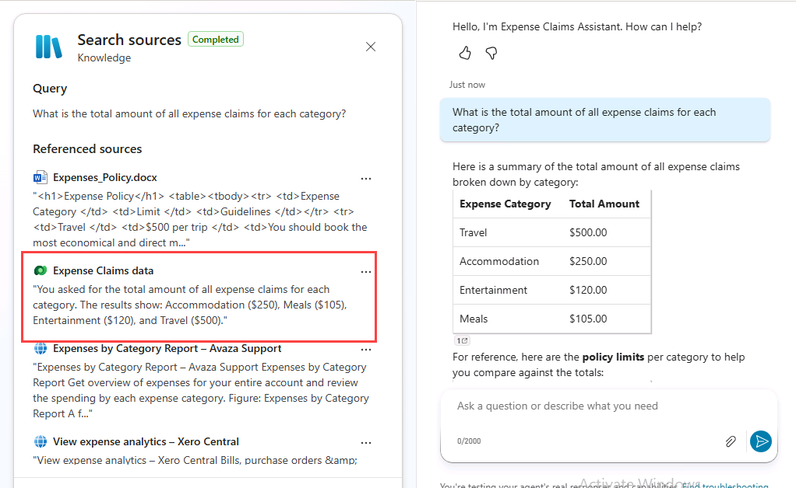
- 새 세션을 시작하고 다음을 입력합니다.
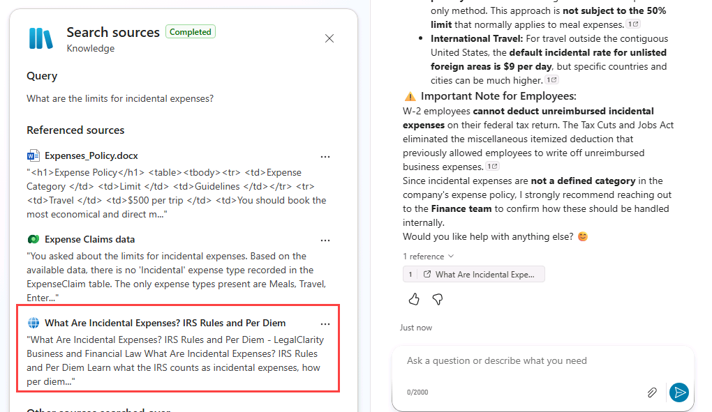
연습 4 · 생성형 AI 설정
작업 4.1 · 에이전트 지식 설정
- 오른쪽 위 Settings를 선택합니다.
- Orchestration이 Yes로 설정된 것을 확인합니다.
- Knowledge 섹션에서 Allow ungrounded responses를 Off로 설정합니다.
- 같은 섹션에서 Use information from the Web도 Off로 설정합니다.
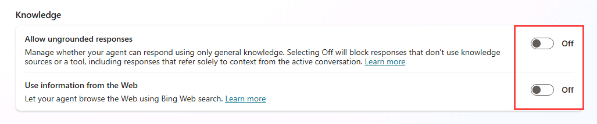
- Save를 선택하고 X로 설정을 닫습니다.
- 앞 연습의 프롬프트로 다시 테스트합니다. 파일과 Dataverse 지식 원본은 쓰이지만 공개 웹사이트는 응답 생성에 쓰이지 않습니다.
작업 4.2 · 생성형 답변 노드 설정
- Topics 탭에서 System 필터를 적용합니다.
- Conversational boosting 토픽을 엽니다.
- Boost your conversations with copilots 대화 상자가 나오면 Done을 선택합니다.
- Create generative answers 노드를 선택합니다.
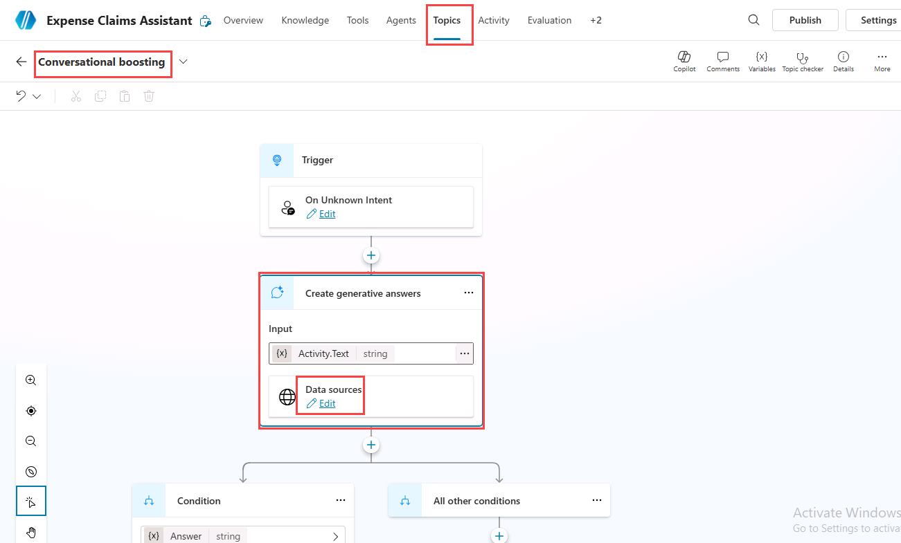
- Data sources 아래 Edit를 선택합니다.
- Search only selected sources를 켭니다.
- Public website 지식 원본을 선택합니다.
- Web search를 켭니다. 켜면 설정된 지식 원본에 더해 공개 웹 정보로 답변을 보충합니다.
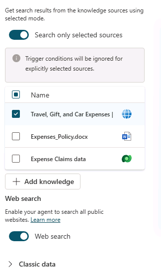
- Save를 선택합니다.
- Overview 탭으로 이동해 테스트 창을 엽니다.
- 줄임표에서 Show activity map when testing을 Off, Track between topics를 On으로 설정합니다.
- 새 세션을 시작하고 다음을 입력합니다.
지식 원본으로는 답할 수 없지만, 생성형 답변이 웹을 검색해 응답을 만듭니다.
작업 4.3 · 폴백 토픽 확인
- Topics 탭에서 System 필터를 적용하고 Conversational boosting 토픽을 엽니다.
- Create generative answers 노드를 선택하고 Data sources 아래 Edit를 선택합니다.
- Web search를 끕니다.
- Save를 선택합니다.
- Overview 탭에서 테스트 창을 열고, 토글이 앞과 같은지 확인합니다.
- 새 세션을 시작하고 같은 환율 질문을 다시 입력합니다.
지식 원본으로도 생성형 답변으로도 답할 수 없으면 대화가 폴백 토픽으로 흘러갈 수 있습니다.
연습 5 · Microsoft Teams에 게시
작업 5.1 · Entra ID 인증
- 오른쪽 위 Settings를 선택합니다.
- 왼쪽에서 Security, 이어서 Authentication을 선택합니다.
- 선택돼 있지 않다면 Authenticate with Microsoft를 선택합니다.
- Save를 두 번 선택하고 설정을 닫습니다.
작업 5.2 · 게시
- Publish를 선택하고 한 번 더 선택해 확인합니다.
작업 5.3 · Teams 채널
이 랩의 Teams 게시는 테스트와 학습 목적입니다. 실제 운영 배포에는 거버넌스, 보안, 앱 승인 절차가 더 필요할 수 있습니다.
- Channels 탭을 선택합니다.
- Microsoft 365 and Microsoft Teams 타일을 선택합니다.
- Make agent available in Microsoft 365 Copilot 선택을 해제합니다.
- Add channel을 선택합니다.
- See agent in Teams를 선택합니다.
- Teams 앱을 열려는 대화 상자가 나오면 Cancel을 선택합니다.
- Use the web app instead를 선택합니다.
- Add를 선택해 Teams에 에이전트를 추가합니다.
- Open을 선택하고 Teams에서 에이전트가 로드될 때까지 기다립니다.
- 게시된 에이전트를 Teams에서 테스트합니다.
에이전트에 지식 원본을 추가하고, 생성형 AI 설정이 지식 원본을 언제 어떻게 쓰는지에 어떤 영향을 주는지 살펴봤습니다.
랩 04 · 워크플로를 도구로 쓰기 60분
도구는 주로 동작 수행이나 외부 데이터 조회에 쓰고, 토픽은 구조화된 대화 흐름을 안내하는 데 씁니다.
Microsoft Teams에 접근할 수 있어야 하고, Teams 채널에 메시지를 올릴 권한이 있어야 합니다.
연습 1 · 에이전트 만들기
작업을 분석하고 분류하고 우선순위를 매기는 에이전트를 만듭니다.
- Copilot Studio 홈에서 쓸 환경이 맞는지 확인하고 Agents를 선택합니다.
- 텍스트 상자 왼쪽 아래 Agent Settings 톱니바퀴 아이콘을 선택합니다.
- 기본 언어는 그대로 두고 Solution에서 Lab Exercises를 선택합니다.
- Schema name에
analyzetaskagent를 입력하고 Update를 선택합니다. - 다음 프롬프트를 입력하고 Send를 선택합니다.
연습 2 · Teams 알림 워크플로 만들기
에이전트 응답, 오케스트레이션 동작, 도구 사용은 테넌트 구성과 모델 동작에 따라 화면과 조금 다를 수 있습니다.
작업 2.1 · 워크플로 만들기
- Copilot Studio 왼쪽 탐색에서 Tools를 선택합니다.
- + New tool을 선택합니다.
- New Tool 대화 상자에서 Agent flow 타일을 선택합니다.
- When an agent calls the flow 트리거와 Respond to the agent 동작이 추가됐는지 확인합니다.
- 트리거 단계를 선택하고 + Add an input을 선택합니다.
- Text를 선택합니다.
- Input에
Task Summary, Please enter your input에Analyzed tasks를 입력합니다.
- 오른쪽 위 Save draft를 선택합니다.
- Overview 탭의 Details 섹션에서 Edit를 선택합니다.
- Flow name을
Send Summary to Teams로 바꿉니다. - Description에
Post a message to Teams with the summary of the task analysis를 입력합니다. - Save를 선택합니다.
작업 2.2 · Teams 게시 동작 추가
- Designer 탭을 선택합니다.
- 두 단계 사이의 + 아이콘으로 새 동작을 삽입합니다.
- 검색 필드에
Teams를 입력하고 Microsoft Teams 커넥터의 See more를 선택합니다.
- Post message in a chat or channel 동작을 선택합니다.
- Sign in을 선택합니다.
"Failed to create OAuth connection: ClientWarning: The browser has blocked the connection authentication popup window" 오류가 나면, 주소 표시줄의 팝업 차단 아이콘을 선택하고 Always allow pop-ups and redirects from https://copilotstudio.microsoft.com을 선택하세요.
- 계정을 선택합니다. Confirmation required 대화 상자가 나오면 확인란을 선택하고 Allow access를 선택합니다.
- Post as는 Flow bot, Post in은 Channel을 선택합니다.
- Team과 Channel을 목록에서 고릅니다. 예를 들어 Leadership의 General입니다.
- Message는 Dynamic Content에서 Task Summary를 선택합니다.
작업 2.3 · 응답 동작 설정
- 캔버스에서 Respond to the agent 노드를 선택하고 + Add an output을 선택합니다.
- Text를 선택합니다.
- Enter a name에
Message를 입력합니다. - Enter a value to respond with는 Dynamic Content에서 Teams 동작의 Message link를 선택합니다.
- Save draft, 이어서 Publish를 선택합니다.
- 왼쪽 탐색 Tools에서 워크플로 상태가 Ready인지 확인합니다.
작업 2.4 · 워크플로를 도구로 추가
- 왼쪽 탐색에서 Agents를 선택하고 Task Analysis 에이전트를 엽니다.
- Tools 탭에서 + Add a tool을 선택합니다.
- Add tool 대화 상자에서 Flow 필터를 적용합니다.
- Send Summary to Teams 워크플로를 선택하고 Add and configure를 선택합니다.
- Details 섹션의 Description에 다음을 입력합니다.
- Additional details를 펼치고 다음처럼 설정합니다.
- When this tool may be used · Agent may use this tool at any time
- Ask the end user before running · No
- Credentials to use · End user credentials
- Description ·
Please sign in to notify Teams
- Inputs 섹션의 Fill using에서 Dynamically fill with AI를 선택합니다. 대화 맥락에서 적절한 입력값을 에이전트가 알아서 정합니다.
- Completion 섹션의 After running에서 Write the response with generative AI를 선택합니다.
- Save를 선택합니다.
작업 2.5 · 지침 교체
Copilot이 에이전트를 만들 때 생성하는 지침은 매번 다르고 대체로 길고 두루뭉술합니다. 그런 지침은 에이전트가 토픽과 도구를 부르지 않고 자기 지식으로 답하거나 사용자에게 작업 목록을 되묻게 만듭니다. 남은 연습에서 동작이 예측 가능하도록 구체적인 지침으로 교체합니다.
- Overview 탭의 Instructions 섹션에서 Edit를 선택합니다.
- 기존 텍스트를 모두 선택해 지웁니다.
- 아래 지침을 입력합니다.
<Send Summary to Teams>같은 자리 표시자는 그대로 타이핑하지 말고/를 입력한 뒤 목록에서 해당 도구를 선택해 참조로 삽입합니다.
- Save를 선택합니다.
작업 2.6 · 도구 테스트
- 테스트 창을 열고 Show activity map when testing을 On, Track between topics를 Off로 설정합니다.
- +로 새 세션을 시작하고 다음을 입력합니다.
- Microsoft Teams 연결을 요청하면 Allow를 선택합니다.
- 새 탭에서
https://teams.cloud.microsoft/로 이동합니다. - 앞서 고른 팀과 채널로 가서 작업 분석 요약이 올라왔는지 확인합니다.
연습 3 · Excel 파일을 분석하는 워크플로를 토픽에서 호출
작업 3.1 · Excel 파일 만들기
스프레드시트를 직접 만들기 어렵다면 원문 랩의 Operations tasks.xlsx 파일을 내려받아 써도 됩니다.
- Copilot Studio 왼쪽 위 앱 시작 관리자 아이콘에서 OneDrive를 선택합니다.
- + Create or upload에서 Excel workbook을 선택합니다.
- 왼쪽 위 Book을 선택해 파일 이름을
Operations tasks로 바꿉니다.
- 다음 표대로 데이터를 입력합니다.
| Reference | Title | Description | Requested by | Priority | Status |
|---|---|---|---|---|---|
| OPS-001 | Server Patch Update | Apply monthly security patches to production servers | IT Operations | High | Open |
| OPS-002 | Backup Validation | Verify nightly backups completed successfully | Infrastructure Team | Medium | In Progress |
| OPS-003 | Access Review | Review and remove inactive user accounts | Security Team | High | Open |
| OPS-004 | Incident Report | Document root cause for recent service outage | Service Desk | Medium | Completed |
- 데이터가 있는 범위(A1:F5)를 선택하고 Insert 탭에서 Table을 선택합니다. My table has headers를 체크하고 OK를 선택합니다.
- Table Design 탭에서 테이블 이름을 Table1에서
Tasks로 바꿉니다.
- Excel 탭을 닫습니다. OneDrive의 My files에서 파일이 있는지 확인하고 탭을 닫습니다.
작업 3.2 · Get Task List 워크플로 만들기
- Copilot Studio 왼쪽 탐색에서 Tools를 선택합니다.
- + Add a tool을 선택합니다. 화면에 따라 + New tool로 보일 수 있습니다.
- Agent flow 타일을 선택합니다.
- 트리거와 응답 동작이 추가됐는지 확인합니다.
- 트리거 단계를 선택하고 + Add an input, Text를 선택합니다.
- Input에
Priority, Please enter your input에Priority of Tasks를 입력합니다. - Save draft를 선택합니다.
- Overview 탭의 Details에서 Edit를 선택합니다.
- Flow name을
Get Task List로, Description을Retrieve a list of tasks with a matching priority로 설정하고 Save를 선택합니다. - Designer 탭에서 두 단계 사이 +로 새 동작을 삽입합니다.
- 검색 필드에
Excel을 입력하고 Excel Online (Business) 커넥터의 See more를 선택합니다. - List rows present in a table 동작을 선택합니다.
- Sign in으로 연결을 만듭니다. 이 랩 계정을 선택하고, 확인 요청이 나오면 확인란을 선택한 뒤 Allow access를 선택합니다.
- 다음처럼 설정합니다.
- Location · OneDrive for Business
- Document library · OneDrive
- File · Operations tasks 통합 문서
- Table · Tasks
- Show all을 선택합니다.
- Filter query에
Priority eq ''를 입력합니다. - 작은따옴표 사이에 커서를 두고 Dynamic content로 Priority 입력 매개변수를 삽입합니다.
- Respond to the agent 노드를 선택하고 + Add an output, Text를 선택합니다.
- Enter a name에
Task list를 입력합니다. - Enter a value to respond with에서 필드를 선택하고 Expression (fx)을 고른 뒤 다음 식을 입력하고 Add를 선택합니다. 반환된 행을 Text 출력 형식에 맞는 문자열로 바꾸는 식입니다.
string(outputs('List_rows_present_in_a_table')?['body/value'])- Save draft, 이어서 Publish를 선택합니다.
- Tools에서 상태가 Ready인지 확인합니다.
작업 3.3 · 토픽 추가
- Agents에서 Task Analysis 에이전트를 엽니다.
- Topics 탭에서 + Add a topic, Add from description with Copilot을 선택합니다.
- Name your topic에
Priority Tasks를 입력합니다. - Create a topic to...에
Ask the user to choose a priority from a list containing High, Medium, and Low를 입력하고 Create를 선택합니다.
- 질문 노드 아래의 Priority 변수를 선택해 변수 속성을 엽니다.
- Usage에서 Global (any topic can access)를 선택합니다.
- Save를 선택합니다.
작업 3.4 · 워크플로를 도구로 추가
- Tools 탭에서 + Add a tool, Flow 필터를 선택합니다.
- Get Task List 워크플로를 선택하고 Add and configure를 선택합니다.
- Description에
Retrieves a list of tasks for a specified priority를 입력합니다. - Additional details를 펼치고 다음처럼 설정합니다.
- When this tool may be used · Only when referenced by topics or agents
- Ask the end user before running · No
- Credentials to use · End user credentials
- Description ·
Please sign in to retrieve tasks
- Inputs 섹션의 Fill using에서 Custom value를 선택하고 Priority 전역 변수를 선택합니다.
- Global.Priority 값 옆 줄임표에서 Formula (fx)를 선택하고
Text(Global.Priority)를 입력한 뒤 Insert를 선택합니다.
Priority 질문은 선택(choice) 값을 저장하는데 워크플로는 텍스트를 요구합니다. 변환하지 않으면 형식 불일치 오류가 납니다.
- Completion 섹션의 After running에서 Write the response with generative AI를 선택합니다.
- Save를 선택합니다.
작업 3.5 · 토픽에 도구 연결
- Topics 탭에서 Priority Tasks 토픽을 엽니다.
- 질문 노드 아래 +를 선택하고 Add a tool, Tool 탭에서 Get Task List 도구를 선택합니다.
- Save를 선택합니다.
작업 3.6 · 지침에 토픽 추가
- Overview 탭의 Instructions에서 Edit를 선택합니다.
- # Skills 섹션에 새 줄을 넣고
- Use the를 입력한 뒤/로 Priority Tasks 토픽을 선택하고topic to get the task list.를 입력합니다. - # Step-by-step instructions의 1. Analyze tasks 아래에도 같은 줄을 추가합니다.
- Save를 선택합니다.
작업 3.7 · 테스트
- 테스트 창을 열고 Show activity map when testing을 Off, Track between topics를 On으로 설정합니다.
- 새 세션을 시작하고 다음을 입력합니다.
Priority Tasks 토픽이 표시됩니다.
에이전트가 토픽을 열지 않고 바로 답한다면, Overview 탭에서 지침이 Priority Tasks 토픽과 Send Summary to Teams 도구를 참조로 삽입하고 있는지 확인한 뒤 새 세션을 시작하세요.
- Medium을 선택합니다.
- Excel Online (Business) 연결을 요청하면 Allow를 선택합니다.
- 테스트 창에 두 개의 작업이 표시됩니다.
- 새 탭에서 Teams로 이동해 앞서 고른 채널에 두 작업이 올라왔는지 확인합니다.
생성형 AI가 알아서 호출하는 워크플로 도구와, 토픽에서 명시적으로 호출하는 워크플로 도구를 각각 만들었습니다.
랩 05 · 새 Copilot Studio 환경으로 만들기 30분
새 Copilot Studio 환경은 기존 토픽 작성 캔버스를 대체하는 새 인터페이스입니다. 이 랩의 단계와 화면은 새 환경 기준입니다. 환경이 기존 인터페이스로 보인다면 안내에 따라 새 환경으로 전환한 뒤 진행하세요.
새 환경은 토픽 작성 캔버스를 더 단순한 지침 기반 모델로 대체합니다.
| 기존 환경 | 새 환경 |
|---|---|
| 토픽 트리와 트리거 문구로 동작 정의 | 자연어 지침으로 동작 정의 |
| 제작자가 노드 하나씩 대화 흐름을 만듦 | 에이전트가 응답 방법을 동적으로 추론 |
| 토픽, 조건, 분기가 대화 경로를 통제 | 지침, 지식, 동작이 할 일을 결정 |
| 동작을 쓰려면 Power Automate 워크플로를 만들고 입출력을 설정한 뒤 도구로 추가 | 사전 제작 커넥터 동작을 Copilot Studio에서 바로 추가. 워크플로 작성이 필요 없음 |
새 환경은 열린 결말의 맥락 의존적 대화에 잘 맞습니다. 기존 환경은 순서가 보장되고 감사 가능한 단계가 필요할 때, 예를 들어 정해진 순서로 구조화된 데이터를 수집할 때 여전히 적합합니다.
연습 1 · 새 환경으로 전환
https://copilotstudio.microsoft.com/으로 이동해 로그인합니다.- 페이지 상단에서 쓸 환경이 맞는지 확인합니다.
- Try the new experience 배너나 알림이 보이면 선택합니다. New experience 토글이 안 보이면
https://copilotstudio.preview.microsoft.com/으로 직접 이동합니다.
환경에 따라 새 환경이 이미 기본일 수 있습니다. 화면이 이 랩 단계와 이미 맞는다면 새 환경을 쓰고 있는 것이니 연습 2로 넘어가세요.
작업 1.2 · 새 인터페이스 살펴보기
- 왼쪽 탐색의 주요 항목을 확인합니다. Home, Agent Ops, Chat, Agents, Workflows입니다.
- Agents 페이지에 기존 에이전트가 보입니다. 새 환경에서 만든 에이전트에는 토픽 캔버스가 없고, 동작은 전부 Overview 페이지의 지침, 지식, 동작으로 정의됩니다.
- 탐색에 Topics 섹션이 없다는 점을 확인합니다. 새 환경에서 토픽은 동작과 지침으로 대체됩니다.
연습 2 · 에이전트 만들기
Contoso라는 가상 회사의 IT 지원 에이전트를 만듭니다. 흔한 IT 문제 해결을 돕고, 해결이 안 되면 지원 티켓 제출을 돕습니다.
작업 2.1 · 에이전트 생성
- 왼쪽 탐색에서 Home을 선택합니다.
- 빌드 프롬프트 상자에 다음 설명을 입력합니다.
환경에 따라 표준 주소로 접속하면 Home 페이지에 빌드 프롬프트 상자가 나타나지 않습니다. 상자가 보이지 않으면 미리 보기 주소 https://copilotstudio.preview.microsoft.com/으로 Copilot Studio를 열고 실습을 이어 갑니다.
새 환경은 이 설명을 바탕으로 초기 지침 묶음을 자동 생성합니다. 계속하기 전에 내용을 확인하세요.
- 확인 질문이 나오면 더 정확한 지침이 만들어지도록 답합니다. 예를 들어 다음과 같습니다.
- 직원이 IT 지원 티켓을 어떻게 제출하는지 물으면, ServiceNow나 Jira, Dynamics 365, Zendesk가 아니라 IT 헬프데스크로 지원 요청 메일 보내기를 고릅니다.
- 기술 문서나 SharePoint 사이트, 웹사이트를 참조할지 물으면 외부 지식 원본이 필요 없다는 쪽을 고릅니다.
- 질문을 넘길 때는 Continue, 해당 없는 질문은 Skip, 끝나면 Submit을 선택합니다.
설명과 환경에 따라 확인 질문이 다르게 나오거나 아예 안 나올 수 있습니다. 정확히 이 질문과 선택지를 기대하지 말고, 랩 시나리오에 맞게 답하세요.
- 지원 요청을 보낼 메일 주소를 물으면 관리자 메일 주소를 입력하고 Submit을 선택합니다.
- 자동 생성된 지침을 확인하고 수락해 에이전트를 만듭니다.
- 오른쪽 Artifacts 패널에서 에이전트를 선택해 Build 탭을 엽니다.
작업 2.2 · 지침 확인하고 다듬기
- Build 탭에서 Instructions 섹션을 찾습니다.
- 설명에서 생성된 지침을 읽어 봅니다. 목적, 어조, 일반 동작이 담겨 있어야 합니다.
- 다음 지침을 추가하고 Save를 선택합니다.
새 환경에서 지침은 동작을 통제하는 주된 수단입니다. 지침을 잘 쓰면 추가 설정이 줄고 에이전트가 더 예측 가능해집니다.
연습 3 · 테스트하고 다듬기
작업 3.1 · Preview 탭 열기
- 페이지 위쪽 Preview 탭을 선택해 에이전트를 테스트합니다.
- 테스트하면 각 응답 위에 추론 요약이 자동으로 나타나 에이전트가 무엇을 어떻게 판단했는지 알려 줍니다. Show more를 선택하면 전체 추론 추적이 펼쳐집니다.
새 환경의 핵심 기능입니다. 어떤 지식 원본이나 동작을 고려했고 왜 그랬는지 보여 줍니다. 예를 들어 Loaded Skill 항목은 어떤 동작이나 스킬을 호출했는지 알려 줍니다.
작업 3.2 · 지침 테스트
- Preview 탭 위쪽에서 New chat을 선택합니다.
- 다음 프롬프트를 입력합니다.
작성한 지침에 따라 에이전트는 티켓을 제안하기 전에 셀프서비스 포털로 안내해야 합니다.
작업 3.3 · 추론 동작 테스트
- New chat을 선택합니다.
- 다음 프롬프트를 입력합니다.
작성한 지침에 따라 에이전트는 하드웨어 고장을 원격으로 진단하기를 거절하고 IT 데스크에 직접 연락하도록 권해야 합니다. 대신 지원 티켓 제출을 제안할 수도 있습니다.
- 요청하면 이름, 메일 주소, 문제에 대한 짧은 설명을 제공합니다.
작업 3.4 · 결과를 보고 지침 다듬기
- 세 번의 테스트 세션에서 에이전트가 어떻게 응답했는지 살펴봅니다.
- 의도와 다른 응답이 있었다면 Build 탭의 Instructions에서 해당 지침을 손봅니다. 예를 들어 셀프서비스 포털을 언급하지 않았다면 더 명시적으로 씁니다.
- Publish, 이어서 Save and Publish를 선택하고 해당 시나리오를 다시 테스트합니다.
지침을 반복해서 다듬는 것이 새 환경의 주된 튜닝 방법입니다. 표현을 조금만 바꿔도 동작이 크게 달라집니다.
새 환경으로 지침 기반 IT 지원 에이전트를 만들었습니다. 동작을 전부 자연어 지침으로 설정하고, 사전 제작 커넥터 동작을 Power Automate 워크플로 없이 바로 추가했습니다. 워크플로를 만들고 입출력을 설정하고 따로 게시해야 했던 랩 04와 비교하면, 단순한 동작에 드는 제작 노력이 크게 줄어듭니다. Preview 창의 추론 추적으로 에이전트가 응답 전에 무엇을 판단했는지도 확인했습니다. 이제 두 환경을 모두 겪었으니 상황에 맞게 고를 수 있습니다. 열린 대화에는 지침 기반, 순서가 보장되고 감사 가능한 단계가 필요하면 기존 토픽과 워크플로입니다.
문제 해결 모음
| 증상 | 해결 |
|---|---|
| Copilot Studio가 내 환경에서 로드되지 않는다 | 관리 센터 URL에서 환경 ID를 복사해 https://copilotstudio.microsoft.com/environments/<환경ID>/home으로 직접 접근합니다. |
| 커넥터 로그인 팝업이 차단된다 | 주소 표시줄의 팝업 차단 아이콘에서 copilotstudio.microsoft.com의 팝업을 항상 허용합니다. |
| 업로드한 파일로 답을 못 한다 | Knowledge 탭에서 상태가 Ready인지 확인합니다. 색인에 10분 이상 걸릴 수 있습니다. |
| 공개 웹사이트 답변이 불완전하다 | 색인이 끝날 때까지 몇 분 기다렸다가 다시 테스트합니다. |
| 에이전트가 토픽이나 도구를 안 부른다 | 지침에서 토픽과 도구를 /로 삽입한 참조로 넣었는지 확인하고 새 테스트 세션을 시작합니다. |
| 워크플로 입력에서 형식 오류가 난다 | 선택(choice) 값을 텍스트로 바꿔야 합니다. Text(Global.변수명) 수식을 씁니다. |
| 데모 웹사이트 링크가 없다 | 인증이 Authenticate with Microsoft이면 쓸 수 없습니다. No authentication이나 수동 인증으로 바꿉니다. |
| Edit with Copilot이 노드를 잘못 고쳤다 | Undo를 누르고 다른 표현으로 다시 시도합니다. |
| 화면이 랩 설명과 다르다 | 랩 00~04는 표준 인터페이스 기준입니다. New experience 토글을 끄세요. |
| 랩 05에서 Home에 빌드 프롬프트 상자가 없다 | 미리 보기 주소 https://copilotstudio.preview.microsoft.com/으로 다시 접속합니다. |